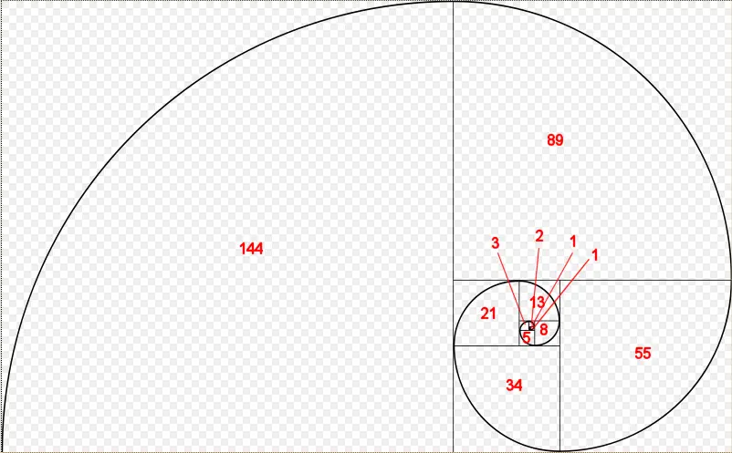

20.3 — 递归
一个 递归函数 在 C++ 中是一个调用自身的函数。下面是一个编写不佳的递归函数示例：
#include <iostream>
void countDown(int count)
{
std::cout << "push " << count << '\n';
countDown(count-1); // countDown() 递归调用自身
}
int main()
{
countDown(5);
return 0;
}
当调用 countDown(5) 时，会打印“push 5”，然后调用 countDown(4)。countDown(4) 打印“push 4”并调用 countDown(3)。countDown(3) 打印“push 3”并调用 countDown(2)。countDown(n) 调用 countDown(n-1) 的序列无限重复，实际上形成了递归等价于无限循环。
在课程 20.2 -- 栈和堆中，你了解到每次函数调用都会导致数据被放置在调用栈上。由于 countDown() 函数从不返回（它只是再次调用 countDown()），这些信息永远不会从栈中弹出！因此，在某个时刻，计算机将耗尽栈内存，导致栈溢出，程序将崩溃或终止。在作者的机器上，这个程序在终止前一直倒数到 -11732！
作者注
一个 尾调用 是发生在函数尾部（末尾）的函数调用。具有递归尾调用的函数很容易被编译器优化为迭代（非递归）函数。这样的函数不会导致系统在上面的示例中耗尽栈空间。如果你运行上面的程序并且它永远运行，很可能就是这种情况。
递归终止条件
递归函数调用通常与普通函数调用一样工作。然而，上面的程序说明了递归函数最重要的区别：你必须包含一个递归终止条件，否则它们将“永远”运行（实际上，直到调用栈耗尽内存）。一个 递归终止 是一个条件，当满足时，将导致递归函数停止调用自身。
递归终止通常涉及使用 if 语句。下面是我们重新设计的带有终止条件的函数（以及一些额外的输出）：
#include <iostream>
void countDown(int count)
{
std::cout << "push " << count << '\n';
if (count > 1) // 终止条件
countDown(count-1);
std::cout << "pop " << count << '\n';
}
int main()
{
countDown(5);
return 0;
}
现在当我们运行程序时，countDown() 将首先输出以下内容：
push 5 push 4 push 3 push 2 push 1
如果你此时查看调用栈，你会看到以下内容：
countDown(1) countDown(2) countDown(3) countDown(4) countDown(5) main()
由于终止条件，countDown(1) 不会调用 countDown(0) —— 相反，“if 语句”不会执行，因此它打印“pop 1”然后终止。此时，countDown(1) 从栈中弹出，控制权返回给 countDown(2)。countDown(2) 在调用 countDown(1) 之后的点恢复执行，因此它打印“pop 2”然后终止。递归函数调用随后依次从栈中弹出，直到所有 countDown 实例都被移除。
因此，这个程序总共输出：
push 5 push 4 push 3 push 2 push 1 pop 1 pop 2 pop 3 pop 4 pop 5
值得注意的是，“push”输出按正向顺序发生，因为它们出现在递归函数调用之前。“pop”输出按反向顺序发生，因为它们出现在递归函数调用之后，当函数从栈中弹出时（这发生在它们被放入的相反顺序）。
一个更有用的示例
既然我们已经讨论了递归函数调用的基本机制，让我们看看另一个稍微更典型的递归函数：
// 返回从 1（含）到 sumto（含）之间所有整数的和
// 对于负数返回0
int sumTo(int sumto)
{
if (sumto <= 0)
return 0; // 当用户传入意外参数（0或负数）时的基本情况（终止条件）
if (sumto == 1)
return 1; // 正常的基本情况（终止条件）
return sumTo(sumto - 1) + sumto; // 递归函数调用
}
递归程序通常很难仅通过查看来理解。看看当我们用特定值调用递归函数时会发生什么通常是有启发性的。所以让我们看看当我们用参数 sumto = 5 调用这个函数时会发生什么。
sumTo(5) called, 5 <= 1 is false, so we return sumTo(4) + 5. sumTo(4) called, 4 <= 1 is false, so we return sumTo(3) + 4. sumTo(3) called, 3 <= 1 is false, so we return sumTo(2) + 3. sumTo(2) called, 2 <= 1 is false, so we return sumTo(1) + 2. sumTo(1) called, 1 <= 1 is true, so we return 1. This is the termination condition.
现在我们展开调用栈（在返回时从调用栈中弹出每个函数）：
sumTo(1) returns 1. sumTo(2) returns sumTo(1) + 2, which is 1 + 2 = 3. sumTo(3) returns sumTo(2) + 3, which is 3 + 3 = 6. sumTo(4) returns sumTo(3) + 4, which is 6 + 4 = 10. sumTo(5) returns sumTo(4) + 5, which is 10 + 5 = 15.
此时，更容易看出我们正在将 1 到传入的值（包括两端）之间的数字相加。
因为递归函数可能难以通过查看来理解，所以良好的注释特别重要。
注意，在上面的代码中，我们使用值 sumto - 1 对于这个程序，我们有 3 个任务：获取初始塔高，计算球的当前高度，以及打印球的当前高度。根据函数应只做一件事的最佳实践，我们为每个任务编写不同的函数。 --sumto进行递归。我们这样做是因为 operator-- 有副作用，并且在给定表达式中多次使用具有副作用的变量会导致未定义行为。使用 sumto - 1 避免了副作用，使得 sumto 在表达式中可以安全地多次使用。
递归算法
递归函数通常通过首先找到问题子集的解（递归地），然后修改该子解以得到解来解决问题。在上面的算法中，sumTo(value) 首先求解 sumTo(value-1)，然后加上变量 value 的值来找到 sumTo(value) 的解。
在许多递归算法中，某些输入产生平凡的输出。例如，sumTo(1) 有平凡输出 1（你可以在脑中计算），并且不会从进一步递归中受益。算法平凡产生输出的输入称为 基本情况。基本情况充当算法的终止条件。通常可以通过考虑输入为 0、1、“”、”或 null 时的输出来识别基本情况。
斐波那契数
最著名的数学递归算法之一是斐波那契数列。斐波那契数列出现在自然界中的许多地方，例如树木的分枝、贝壳的螺旋、菠萝的果粒、展开的蕨叶以及松果的排列。
这是一张斐波那契螺旋的图片：

每个斐波那契数都是该数字所在正方形的边长。
斐波那契数在数学上定义为：
| F(n) = | 0 如果 n = 0 1 如果 n = 1 f(n-1) + f(n-2) 如果 n > 1 |
因此，编写一个（不太高效的）递归函数来计算第 n 个斐波那契数相当简单：
#include <iostream>
int fibonacci(int count)
{
if (count == 0)
return 0; // 基本情况（终止条件）
if (count == 1)
return 1; // 基本情况（终止条件）
return fibonacci(count-1) + fibonacci(count-2);
}
// 以及一个显示前13个斐波那契数的主程序
int main()
{
for (int count { 0 }; count < 13; ++count)
std::cout << fibonacci(count) << ' ';
return 0;
}
运行程序产生以下结果：
0 1 1 2 3 5 8 13 21 34 55 89 144
你会注意到这些正是斐波那契螺旋图中出现的数字。
记忆化算法
上述递归斐波那契算法效率不高，部分原因在于每次对非基本情况斐波那契的调用都会导致两次更多的斐波那契调用。这会产生指数级的函数调用次数（实际上，上面的例子调用了 fibonacci() 1205 次！）。有一些技术可以用来减少必要的调用次数。一种称为 记忆化的技术，缓存了昂贵函数调用的结果，以便在再次出现相同输入时可以返回该结果。
这是递归斐波那契算法的记忆化版本：
#include <iostream>
#include <vector>
// 感谢 potterman28wxcv 提供了此代码的一个变体
// count 现在是 std::size_t 类型，以便更容易地对 std::vector 进行索引
int fibonacci(std::size_t count)
{
// 我们将使用静态 std::vector 来缓存已计算的结果
static std::vector results{ 0, 1 };
// 如果已经见过这个 count，则使用缓存的结果
if (count < std::size(results))
return results[count];
// 否则计算新结果并添加它
results.push_back(fibonacci(count - 1) + fibonacci(count - 2));
return results[count];
}
// 以及一个显示前13个斐波那契数的主程序
int main()
{
for (int count { 0 }; count < 13; ++count)
std::cout << fibonacci(static_cast<std::size_t>(count)) << ' ';
return 0;
}
这个记忆化版本只进行了35次函数调用，比原始算法的1205次要好得多。
递归 vs 迭代
关于递归函数，经常有人问：“如果可以用迭代（使用 for 循环 或 while循环）完成同样的任务，为什么还要用递归函数呢？”事实证明，你总是可以用迭代来解决递归问题——然而，对于非平凡的问题，递归版本通常更容易编写（和阅读）。例如，虽然可以用迭代方式编写斐波那契函数，但这会稍微困难一些！（试试看！）
迭代函数（使用for循环或while循环）几乎总是比它们的递归版本更高效。这是因为每次调用函数时，都会有一些开销用于压栈和弹栈。迭代函数避免了这种开销。
这并不是说迭代函数总是更好的选择。有时函数的递归实现更加清晰易懂，以至于为了可维护性的好处，承担一点额外的开销是完全值得的，特别是当算法不需要递归太多次就能找到解决方案时。
一般来说，当以下大多数条件成立时，递归是一个好的选择：
- 递归代码实现起来简单得多。
- 递归深度可以限制（例如，无法提供导致递归深度达到100,000层的输入）。
- 算法的迭代版本需要管理一个数据栈。
- 这不是一段对性能要求严格的代码。
然而，如果递归算法实现起来更简单，那么先使用递归，之后再优化为迭代算法可能是合理的。
最佳实践
通常优先选择迭代而非递归，除非递归确实有意义。
小测验时间
- 整数 N 的阶乘（写作 N!）定义为 1 到 N 之间所有数字的乘积（0! = 1）。编写一个名为 factorial 的递归函数，返回输入的阶乘。用前 7 个阶乘测试它。
提示：记住 (x * y) = (y * x)，所以 1 到 N 之间所有数字的乘积与 N 到 1 之间所有数字的乘积相同。
#include <iostream>
int factorial(int n)
{
if (n <= 0)
return 1;
return factorial(n - 1) * n;
}
int main()
{
for (int count { 0 }; count < 7; ++count)
std::cout << factorial(count) << '\n';
}
- 编写一个递归函数，接受一个整数作为输入，返回该整数中每个单独数字的和（例如 357 = 3 + 5 + 7 = 15）。打印输入 93427 的答案（即 25）。假设输入值为正数。
#include <iostream>
int sumDigits(int x)
{
if (x < 10)
return x;
return sumDigits(x / 10) + x % 10;
}
int main()
{
std::cout << sumDigits(93427);
}
3a) 这个稍微有点棘手。编写一个程序，要求用户输入一个正整数，然后使用递归函数打印该数字的二进制表示。使用课程中的方法 1 O.4 -- 在二进制和十进制表示之间转换整数。
提示：使用方法 1，我们希望以相反的顺序打印位。这意味着你的打印语句应该放在 之后 递归调用之后。
#include <iostream>
// 感谢读者 Gapo 提供此解决方案
void printBinary(int x)
{
// 终止情况
if (x == 0)
return;
// 递归到下一个位
printBinary(x / 2);
// 打印余数（逆序）
std::cout << x % 2;
}
int main()
{
int x;
std::cout << "Enter a positive integer: ";
std::cin >> x;
printBinary(x);
}
3b) 额外挑战：更新 3a 中的代码，以处理用户可能输入 0 或负数的情况。
以下是一个示例输出（假设为32位整数）：
Enter an integer: -15 11111111111111111111111111110001
提示：你的 printBinary() 函数实际上不需要处理负数。如果你传入一个与负数具有相同二进制表示的正数，它将产生正确的输出。
-15 的二进制表示为 11111111111111111111111111110001，与无符号整数 4294967281。// 感谢读者 Donlod 提供此解决方案
#include <iostream>
void printBinary(unsigned int n)
{
if (n > 1) // 我们仅在 n > 1 时递归，因此这是 n == 0 的终止情况
{
printBinary(n / 2);
}
std::cout << n % 2;
}
int main()
{
int x{};
std::cout << "Enter an integer: ";
std::cin >> x;
printBinary(static_cast<unsigned int>(x));
}
如提示所述，有符号和无符号之间的转换不会改变二进制表示，只会改变值的解释方式。因此，如果我们将用户的输入捕获到一个有符号 int 中，然后将其转换为无符号 int，我们将得到一个始终为正但具有与用户输入的有符号值相同二进制表示的值。这样，我们的函数只需处理正数。